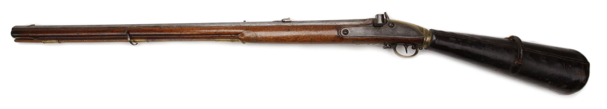

Винтовки и ружья
Винтовка — нарезное стрелковое оружие, конструктивно предназначенное для удержания и управления при стрельбе двумя руками с упором приклада в плечо.
| Название | Патрон | Повр | Точ | Далн | Вес | Сс | Бзс | СЛ | Разм | Отд | Цена | Кл |
|---|---|---|---|---|---|---|---|---|---|---|---|---|
| Супер точная винтовка | .45 Caplock | 5к пб+ | 6+4 | 700/2400 | 29 | 1 | 1 (60) | 12† | -6 | 4 | $5000 | 2 |
| Ружьё охотничье двухствольное | 12G 2.5” | 1к+1 пб | 3 | 40/800 | 7,4 | 2×8 | 2 (4i) | 10† | -6 | 1/5 | $1250 | 4 |
| Ружьё барабанное | 20G Caplock | 1к пб | 2 | 40/800 | 10,9 | 2×7 | 5 (10i) | 11† | -6 | 1/5 | $1700 | 3 |
| Огробой | 8-bore | 6к+2 пб++ | 4 | 180/1800 | 12 | 1 | 2 (3i) | 13† | -5 | 7 | $10000 | 2 |
| Обрез, двухстволка | 12G 2.5” | 1к+1 пб | 2 | 25/600 | 5,4 | 2×8 | 2 (4i) | 12 | -4 | 1/5 | $1300 | 3 |
| Обрез, рычажный карабин | .30-30 | 3к+1 пб+ | 2 | 150/1000 | 5 | 1 | 3+1 (2i) | 11 | -3 | 3 | $2500 | 2 |
| Дворфиский рычажный карабин | .30-30 | 3к+1 пб+ | 3 | 300/2200 | 8,9 | 2 | 7+1 (2i) | 9† | -6 | 2 | $2500 | 2 |
| Мухобойка, 4-х ствольная | 12G 2.5” | 1к+1 пб | 3 | 40/800 | 7,4 | 2×8 | 4 (4i) | 10† | -7 | 1/5 | $2500 | 3 |
| Линейная пехотная винтовка | .69-50 | 3к пб++ | 3 | 400/2000 | 10,9 | 1 | 1 (3) | 10† | -6 | 3 | $1500 | 2 |
| Винтовочный пистолет «Длинный Дворф» | .38 Long | 2к-1 пб | 2 | 70/800 | 8 | 2 | 25+1 (3i) | 8† | -5 | 2 | $2200 | 3 |
| Винтовка пехотная специальная | .45-70 | 5к пб+ | 3 | 470/3000 | 9,2 | 1 | 1 (3) | 10† | -6 | 4 | $2850 | 2 |
| Винтовка парозарядная | .463 Girandoni | 2к пб+ 1к+2 пб+ 1к+1 пб+ |
1 | 60/480 50/400 40/340 |
9,6 | 1 | 21+1 (2i) | 10† | -6 | 2 | $3000 | 2 |
| Винтовка барабанная | .45-70 | 5к пб+ | 4 | 470/300 | 9,3 | 1 | 6 (3i) | 10† | -6 | 3 | $3000 | 2 |
Супер точная винтовка, .45 Caplock
Исторический аналог Sniper Rifle By J.F. Brown Of Haverhill.
- Повреждения: 5к пб+;
- Точность: 6+4;
- Дальность: 700/2400;
- Вес: 29;
- Скорострельность: 1;
- Боезапас: 1 (60);
- Сила: 12†;
- Размер: -6;
- Отдача: 4;
- Цена: $5000;
- Клас Легальности: 2;
- Примечания:
Ружьё охотничье двухствольное, 12G 2.5”
Исторический аналог Remington Hammer Lifter.
- Повреждения: 1к+1 пб;
- Точность: 3;
- Дальность: 40/800;
- Вес: 7,4;
- Скорострельность: 2×8;
- Боезапас: 2 (4i);
- Сила: 10†;
- Размер: -6;
- Отдача: 1/5;
- Цена: $1250;
- Клас Легальности: 4;
- Примечания:
Ружьё барабанное, 20G Caplock
Исторический аналог Colt Model 1855.
- Повреждения: 1к пб;
- Точность: 2;
- Дальность: 40/800;
- Вес: 10,9;
- Скорострельность: 2×7;
- Боезапас: 5 (10i);
- Сила: 11†;
- Размер: -6;
- Отдача: 1/5;
- Цена: $1700;
- Клас Легальности: 3;
- Примечания:
Огробой, 8-bore
Исторический аналог Greener Elephant Rifle
- Повреждения: 6к+2 пб++;
- Точность: 4;
- Дальность: 180/1800;
- Вес: 12;
- Скорострельность: 1;
- Боезапас: 2 (3i);
- Сила: 13†;
- Размер: -5;
- Отдача: 7;
- Цена: $10000;
- Клас Легальности: 2;
- Примечания: Lacks sling swivels;
Обрез, 12G 2.5”
Исторический аналог Sawn-off Remington Hammer Lifter
- Повреждения: 1к+1 пб;
- Точность: 2;
- Дальность: 25/600;
- Вес: 5,4;
- Скорострельность: 2×8;
- Боезапас: 2 (4i);
- Сила: 12;
- Размер: -4;
- Отдача: 1/5;
- Цена: $1300;
- Клас Легальности: 3;
- Примечания:
Обрез рычажный карабин, .30-30
Исторический аналог Winchester M1894
- Повреждения: 3к+1 пб+;
- Точность: 2;
- Дальность: 150/1000;
- Вес: 5;
- Скорострельность: 1;
- Боезапас: 3+1 (2i);
- Сила: 11;
- Размер: -3;
- Отдача: 3;
- Цена: $2500;
- Клас Легальности: 2;
- Примечания:
Дворфиский рычажный карабин, .30-30
Исторический аналог Winchester M1894
- Повреждения: 3к+1 пб+;
- Точность: 3;
- Дальность: 300/2200;
- Вес: 8,9;
- Скорострельность: 2;
- Боезапас: 7+1 (2i);
- Сила: 9†;
- Размер: -6;
- Отдача: 2;
- Цена: $2500;
- Клас Легальности: 2;
- Примечания:
Мухобойка, Four-barreled, 12G
Исторический аналог Charles Lancaster Quad Barrelled Hammerless Shotgun
- Повреждения: 1к+1 пб;
- Точность: 3;
- Дальность: 40/800;
- Вес: 7,4;
- Скорострельность: 2×8;
- Боезапас: 4 (4i);
- Сила: 10†;
- Размер: -7;
- Отдача: 1/5;
- Цена: $2500;
- Клас Легальности: 3;
- Примечания:
Линейная пехотная винтовка, .69-50
Исторический аналог Dreyse M.1841
- Повреждения: 3к пб++;
- Точность: 3;
- Дальность: 400/2000;
- Вес: 10,9;
- Скорострельность: 1;
- Боезапас: 1 (3);
- Сила: 10†;
- Размер: -6;
- Отдача: 3;
- Цена: $1500;
- Клас Легальности: 2;
- Примечания: Malf 16;
Винтовочный пистолет «Длинный Дворф», .38 Long
Исторический аналог Volcanic, .38 Volcanic
- Повреждения: 2к-1 пб;
- Точность: 2;
- Дальность: 70/800;
- Вес: 8;
- Скорострельность: 2;
- Боезапас: 25+1( 3i);
- Сила: 8†;
- Размер: -5;
- Отдача: 2;
- Цена: $2200;
- Клас Легальности: 3;
- Примечания: Malf 16;
Винтовка пехотная специальная, .45-70
Исторический аналог Springfield M1873
- Повреждения: 5к пб+;
- Точность: 3;
- Дальность: 470/3000;
- Вес: 9,2;
- Скорострельность: 1;
- Боезапас: 1 (3);
- Сила: 10†;
- Размер: -6;
- Отдача: 4;
- Цена: $2850;
- Клас Легальности: 2;
- Примечания:
Винтовка парозарядная, .463 Girandoni
Исторический аналог Steyr-Girandoni M.1780

- Повреждения: 2к пб+; 1к+2 пб+; 1к+1 пб+;
- Точность: 1;
- Дальность: 60/480; 50/400; 40/340;
- Вес: 9,6;
- Скорострельность: 1;
- Боезапас: 21+1(2i);
- Сила: 10†;
- Размер: -6;
- Отдача: 2;
- Цена: $3000;
- Клас Легальности: 2;
- Примечания:
Винтовка барабанная, .45-70
Исторический аналог Пехотная винтовка Блейка образца 1892
- Повреждения: 5к пб+;
- Точность: 4;
- Дальность: 470/3000;
- Вес: 9.3;
- Скорострельность: 1;
- Боезапас: 6 (3i);
- Сила: 10†;
- Размер: -6;
- Отдача: 3;
- Цена: $3000;
- Клас Легальности: 2;
- Примечания: Malf 16;